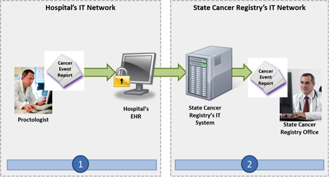

NwHIN 1.0 Portfolio > Scenarios > Reporting a Cancer Diagnosis to a Public Health Cancer Registry
Reporting a Cancer Diagnosis to a Public Health Cancer Registry
A proctologist diagnoses a patient with cancer and files and sends a report to a public health cancer registry:

A patient visits his proctologist after undergoing a battery of tests to determine whether or not he has a malignant tumor in his colon. Upon review of the tests, the proctologist diagnoses him with colon cancer. The hospital registrar sends an electronic report and conclusive test results of this cancer diagnosis to the state cancer registry following the patient’s visit. The Centers for Disease Control and Prevention’s (CDC) National Program of Cancer Registries (NPCR) collects data through state and local registries on the occurrence of cancer; the type, extent, and location of the cancer; and the type of initial treatment. This is critical for cancer control activities aimed at reducing cancer morbidity and mortality, and is required by law.
Meaningful Use Stage 2 Objectives related to cancer case reporting: Capability to identify and report cancer cases to a state cancer registry, except where prohibited, and in accordance with applicable law and practice. (Meaningful Use Menu Set 5 for EPs) |
Common workflow steps for this scenario:
 |
After diagnosing the patient, the proctologist enters the cancer case data into his hospital’s EHR. The case data is structured in accordance with the HL7 CDA Release 2 Content Structure Specification and the HL7 Implementation Guide for Healthcare Provider Reporting to Central Cancer Registries using SNOMED CT and LOINC 2.38 Vocabulary Standards. | |
 |
The EHR that is used by the proctologist automatically sends the cancer case reporting data to the state’s cancer registry. The state’s system processes and stores the cancer case report. |
NwHIN 1.0 specifications and resources recommended for scenario:
Content StructureGuidance that specifies how to structure health information to ensure proper exchange |
|
Vocabulary & Code SetsSpecifications that identify common naming convention necessary for proper health information exchange |
|
Transport and SecurityMechanisms and processes that safely exchange health information over the Internet |